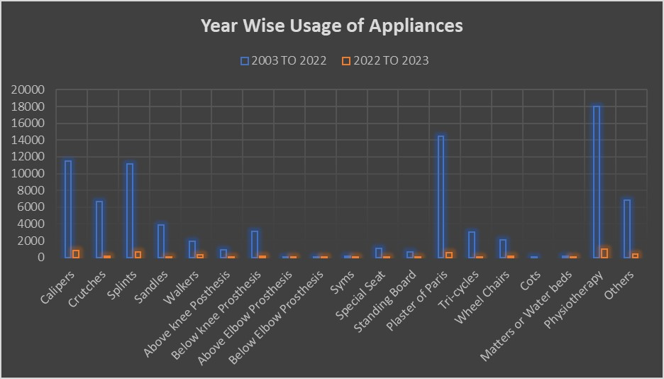

Orthopaedic Workshop Kalyandurg
Othopaedic Workshop:
In an unwavering commitment to fostering accessibility and independence for individuals with physical disabilities, Rural Development Trust (RDT) has strategically established four orthopaedic workshops across the district. These workshops, situated in Kalyandurg (1992), Kuderu (1993), Bathalapalle (2000), and Kadiri (2003), serve as pivotal hubs for the fabrication and supply of low-cost aids, appliances, and assistive devices. The overarching objective is to empower both children and adults with physical disabilities, enhancing their mobility and promoting autonomy in their daily lives.
The focal point of these orthopaedic workshops lies in their ability to cater to the diverse needs of individuals facing physical challenges. By crafting and providing low-cost aids and appliances, the workshops address a spectrum of requirements, ranging from crutches and callipers to more intricate solutions such as artificial limbs or prostheses. This comprehensive approach reflects RDT's dedication to ensuring that individuals with physical disabilities have access to customized and affordable solutions that enhance their mobility and overall quality of life. The workshops are not mere manufacturing units; they operate as comprehensive centers for orthopaedic care. Beyond the production of aids and appliances, they offer a suite of supportive services, including physiotherapy and the application of Plaster of Paris casts. The inclusion of these services underscores RDT's holistic approach to rehabilitation, recognizing the multifaceted nature of the challenges faced by individuals with physical disabilities.
One distinctive focus of these orthopaedic workshops is catering to children with clubfoot. Specialist technicians, armed with expertise and precision, analyze each individual's unique requirements. Based on these assessments, they meticulously craft specific prostheses, including artificial feet and limbs. This personalized approach is vital in ensuring that children, in particular, receive orthopaedic aids that are tailored to their evolving needs, promoting not only mobility but also fostering a sense of autonomy and independence from a young age. The range of orthopaedic aids produced by these workshops extends beyond the conventional, encompassing crutches, callipers, walkers, wheelchairs, and special chairs designed for children with cerebral palsy. Additionally, the workshops provide tricycles, recognizing the importance of facilitating independent mobility for individuals facing physical challenges.
Importantly, the low-cost nature of these aids ensures that they are accessible to a broader demographic, aligning with RDT's ethos of inclusivity and affordability. By removing financial barriers, the orthopaedic workshops contribute to making assistive devices and orthopaedic aids available to a wider spectrum of individuals, regardless of their economic circumstances. In essence, RDT's orthopaedic workshops stand as beacons of inclusive care, embodying a commitment to enhancing the lives of individuals with physical disabilities. Through the meticulous crafting of customized aids, the provision of supportive services, and the emphasis on affordability, these workshops not only address immediate physical needs but also contribute to fostering independence, dignity, and an improved quality of life for those they serve. The strategic distribution of these workshops across the district ensures that the transformative impact of orthopaedic care is extended to diverse communities, marking a significant step towards creating a more inclusive and accessible society.
Father Ferrer, in his visionary approach, established the Orthopaedic Workshop with a singular goal—to enable individuals to lead regular lives with comfort and dignity. His philosophy, ingrained in the ethos of the workshop, emphasizes that every piece of equipment crafted within its walls bears a reasonable price, reflecting a commitment to sustainability and the inherent value of each commodity. Notably, the workshop operates on the principle that commodities provided without cost may be perceived as lacking in intrinsic value. Thus, by attaching a reasonable price to each item, they uphold the belief that valuable commodities are more likely to be cherished and maintained for an extended period.
Crucially, the Orthopaedic Workshop does not provide its appliances free of charge. This intentional decision stems from the belief that assigning value to these aids fosters a sense of responsibility and appreciation among the recipients. By expecting a contribution, albeit reasonable, from those in need, the workshop promotes a collaborative model where individuals actively participate in securing the tools that enhance their mobility and quality of life.
The process of accessing appliances from the workshop is streamlined through the guidance of Mandal samakya. Individuals are directed to the workshop by this local body, and the provision of appliances is carefully tailored to align with the individual's unique history and financial circumstances. This personalized approach ensures that the distribution of aids is not only needs-based but also considers the economic realities faced by each individual.
Father Ferrer's vision goes beyond providing mere aids; it encompasses the broader aspiration of enabling individuals to lead regular lives marked by comfort and politeness. This vision is underpinned by a belief in the dignity of every individual and the notion that empowerment comes not through charity but through facilitating access to tools that individuals can contribute to acquiring.
Statistics of the Kalyandutg Orthopaedic Workshop since 2003
Hypothesis Testing
H0 : Number of clients for the Orthopaedic workshop in 2023 is more than the number of clients in 2003.
H1: Number of clients for the Orthopaedic workshop in 2023 is not more than the number of clients in 2003.

The conducted sample test pertains to the Ortho workshop data gathered in the Kalyandurg area. The primary objective is to ascertain whether the number of clients in 2023 exceeds that of 2003. An increase in clients in 2023 compared to 2003 would suggest potential inefficiencies in RDT's Disability Inclusive Development initiatives. The obtained results indicate that the mean difference and t statistic for the 2023 data group are notably smaller than those for the 2003 data, signifying statistical significance at a 5% significance level.
So, we reject the null hypothesis that RDT is not efficient in the Disability Inclusive Development Sector. It means that since 2003, there has been improvement in the lives of the disability people which is why visit to the Ortho workshop has been declined so far since 2003. From the evidence we found above we can say that Rural Development Trust have really done the great job in implementing the development schemes with respect to the Disability Inclusive Development Sector which is why the clients and consumers of the Orthopaedic workshop at the Kalyandurg Area has been declined from the year 2022.